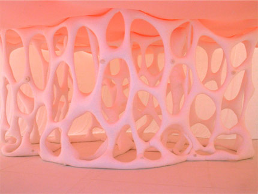

Ernesto Neto
Ernesto Neto began exhibiting in Brazil in 1988 and has had solo
exhibitions abroad since 1995. Neto's installations were featured in
Brazil's national pavilion and in the international group exhibition
at the Arsenale. His work has been described as "beyond abstract
minimalism". His installations are large, soft, biomorphic sculptures
that fill an exhibition space that viewers can touch, poke, and walk
on or through. They are made of white, stretchy material - amorphous
forms stuffed with Styrofoam pellets or, on occasion, aromatic spices.
In some installations, he has also used this material to create translucent
scrims that transform the space's walls and floor. His sculptures can
be regarded as expression of traditional abstract form, but in their
interaction with the viewer, they work on another level.